AHA BIG - Asociación de HaxBall Argentina Big
🏆 Temporada 23 / 📋│t23-ahacl-horarios

GRUPO A
[23:00] 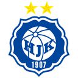 Velez vs. Históricos 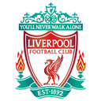 (@EST) #copa-partido1
[23:00] National Basketball Association vs. tuRiver 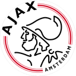 (@deleted-role) #copa-partido2
GRUPO B
[23:00] 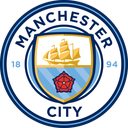 La Vela Puerca vs. Juego Bonito Argentina (@deleted-role) #copa-partido3
[22:45] Vikings Big vs. Burkina Faso 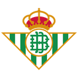 (@SBC) #copa-partido4
GRUPO C
[22:30] 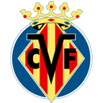 Nueva Chicago vs. Leeds United 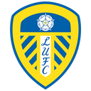 (@deleted-role) #copa-partido5
[22:15] 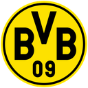 Natus Vincere vs. Titanes del Haxball (@deleted-role) #copa-partido6
GRUPO D
[22:00] 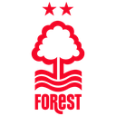 Ricardo Fort vs. Samurai 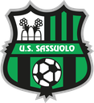 (@deleted-role) #copa-partido7
[23:00] Red Panters vs. Sokker 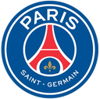 (@deleted-role) #copa-partido8
Jueves 29 de julio (grupos E-H):
GRUPO E
[23:00] SanBri Club vs. Estudiantes 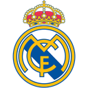 (@VL) #copa-partido1
[23:00] Tiki Tiki United vs. Feyenoord 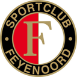 (@Hi) #copa-partido2
GRUPO F
[22:45] No Compro vs. Racing 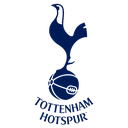 (@deleted-role) #copa-partido3
[23:00] 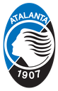 Deportivo Haxball vs. xGodesk 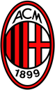 (@deleted-role) #copa-partido4
GRUPO G
[23:00] 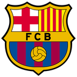 New Galaxy vs. Good Lucky 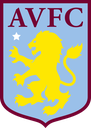 (@deleted-role) #copa-partido5
[22:30] Tigres del Sur vs. Claridad 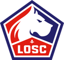 (@JBA) #copa-partido6
GRUPO H
[23:00] Atlético Mineiro vs. Bastards 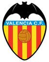 (@deleted-role) #copa-partido7
[22:30] 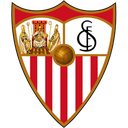 La Tenés Adentro vs. AC Milanesa 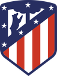 (@deleted-role) #copa-partido8
@🎗 Primera División @🎗 Segunda División @🎗 Tercera División @🎗 Equipos Nuevos
(edited)/kick_ratelimit 6 0 0 previo al comienzo del partido.
Puntos a destacar - Cambios de horario/día
* El cambio de horario de un partido tendrá que ser pactado entre capitanes y anunciado, con la confirmación de ambos, en #⏱│t23-ahacl-cambios.
* Los cambios de días pueden ser sólo hasta el día de la próxima fecha.
* Podrán utilizar un  comodín para solicitar el cambio de día sin confirmación del rival, también en #⏱│t23-ahacl-cambios.
Puntos a destacar - Firmas y arbitraje
* Por el momento NO se usará el sistema AntiDU, sino que se firmará mediante capturas de pantalla. Para averiguar cómo firmar, dirigirse a #🔐│antidu.
* Los árbitros serán los jugadores o equipos que figuran entre paréntesis. Deberán verificar las firmas en el canal indicado junto a cada partido.
* Recomendable revisar el reglamento en #📖│reglamento. (edited)
comodín para solicitar el cambio de día sin confirmación del rival, también en #⏱│t23-ahacl-cambios.
Puntos a destacar - Firmas y arbitraje
* Por el momento NO se usará el sistema AntiDU, sino que se firmará mediante capturas de pantalla. Para averiguar cómo firmar, dirigirse a #🔐│antidu.
* Los árbitros serán los jugadores o equipos que figuran entre paréntesis. Deberán verificar las firmas en el canal indicado junto a cada partido.
* Recomendable revisar el reglamento en #📖│reglamento. (edited)GRUPO A
[23:00] tuRiver vs. Velez (@deleted-role) #copa-partido1
[23:00] Históricos vs. National Basketball Association (@TDS) #copa-partido2
GRUPO B
[22:00] Burkina Faso vs. La Vela Puerca (@deleted-role) #copa-partido3
[23:00] Juego Bonito Argentina vs. Vikings Big (@deleted-role) #copa-partido4
GRUPO C
[22:30] Titanes del Haxball vs. Nueva Chicago (@LTA) #copa-partido5
[22:15] Leeds United vs. Natus Vincere (@deleted-role) #copa-partido6
GRUPO D
[22:45] Sokker vs. Ricardo Fort (@deleted-role) #copa-partido7
[23:00] Samurai vs. Red Panters (@deleted-role) #copa-partido8
Martes 3 de agosto (grupos E-H):
GRUPO E
[23:00] Feyenoord vs. SanBri Club (@deleted-role) #copa-partido1
[23:00] Estudiantes vs. Tiki Tiki United (@TDH) #copa-partido2
GRUPO F
[23:00] xGodesk vs. No Compro (@deleted-role) #copa-partido3
[22:45] Racing vs. Deportivo Haxball (@deleted-role) #copa-partido4
GRUPO G
[22:30] Claridad vs. Good Lucky (@RF) #copa-partido5
[23:00] Tigres del Sur vs. New Galaxy (@SK) #copa-partido6
GRUPO H
[22:00] AC Milanesa vs. Atlético Mineiro (@deleted-role) #copa-partido7
[23:00] La Tenés Adentro vs. Bastards (@SM) #copa-partido8
@🎗 Primera División @🎗 Segunda División @🎗 Tercera División @🎗 Equipos Nuevos
(edited)/kick_ratelimit 6 0 0 previo al comienzo del partido.
Puntos a destacar - Cambios de horario/día
* El cambio de horario de un partido tendrá que ser pactado entre capitanes y anunciado, con la confirmación de ambos, en #⏱│t23-ahacl-cambios.
* Los cambios de días pueden ser sólo hasta el día de la próxima fecha.
* Podrán utilizar un comodín para solicitar el cambio de día sin confirmación del rival, también en #⏱│t23-ahacl-cambios.
Puntos a destacar - Firmas y arbitraje
* Por el momento NO se usará el sistema AntiDU, sino que se firmará mediante capturas de pantalla. Para averiguar cómo firmar, dirigirse a #🔐│antidu.
* Los árbitros serán los jugadores o equipos que figuran entre paréntesis. Deberán verificar las firmas en el canal indicado junto a cada partido.
* Recomendable revisar el reglamento en #📖│reglamento.GRUPO A
[23:00] Velez vs. National Basketball Association (@deleted-role) #copa-partido1
[23:00] tuRiver vs. Históricos (@deleted-role) #copa-partido2
GRUPO B
[23:00] La Vela Puerca vs. Vikings Big (@SBC) #copa-partido3
[22:45] Burkina Faso vs. Juego Bonito Argentina (@deleted-role) #copa-partido4
GRUPO C
[22:15] Nueva Chicago vs. Natus Vincere (@deleted-role) #copa-partido5
[22:30] Titanes del Haxball vs. Leeds United (@deleted-role) #copa-partido6
GRUPO D
[22:45] Ricardo Fort vs. Red Panters (@TDS) #copa-partido7
[23:00] Sokker vs. Samurai (@deleted-role) #copa-partido8
Jueves 5 de agosto (grupos E-H):
GRUPO E
[23:00] SanBri Club vs. Tiki Tiki United (@Hi) #copa-partido1
[23:00] Feyenoord vs. Estudiantes (@deleted-role) #copa-partido2
GRUPO F
[23:00] No Compro vs. Deportivo Haxball (@deleted-role) #copa-partido3
[22:00] xGodesk vs. Racing (@JBA) #copa-partido4
GRUPO G
[23:00] Good Lucky vs. Tigres del Sur (@deleted-role) #copa-partido5
[22:15] New Galaxy vs. Claridad (@deleted-role) #copa-partido6
GRUPO H
[23:00] Atlético Mineiro vs. La Tenés Adentro (@TDH) #copa-partido7
[22:30] Bastards vs. AC Milanesa (@deleted-role) #copa-partido8
@🎗 Primera División @🎗 Segunda División @🎗 Tercera División @🎗 Equipos Nuevos/kick_ratelimit 6 0 0 previo al comienzo del partido.
Puntos a destacar - Cambios de horario/día
* El cambio de horario de un partido tendrá que ser pactado entre capitanes y anunciado, con la confirmación de ambos, en #⏱│t23-ahacl-cambios.
* Los cambios de días pueden ser sólo hasta el día sábado 7 de agosto.
* Podrán utilizar un comodín para solicitar el cambio de día sin confirmación del rival, también en #⏱│t23-ahacl-cambios.
Puntos a destacar - Firmas y arbitraje
* Por el momento NO se usará el sistema AntiDU, sino que se firmará mediante capturas de pantalla. Para averiguar cómo firmar, dirigirse a #🔐│antidu.
* Los árbitros serán los jugadores o equipos que figuran entre paréntesis. Deberán verificar las firmas en el canal indicado junto a cada partido.
* Recomendable revisar el reglamento en #📖│reglamento. (edited) 1
1/kick_ratelimit 6 0 0 previo al comienzo del partido.
Puntos a destacar - Cambios de horario/día
* El cambio de horario de un partido tendrá que ser pactado entre capitanes y anunciado, con la confirmación de ambos, en #⏱│t23-ahacl-cambios.
* Los cambios de días pueden ser sólo hasta el día martes 10 de agosto.
* Podrán utilizar un comodín para solicitar el cambio de día sin confirmación del rival, también en #⏱│t23-ahacl-cambios.
Puntos a destacar - Firmas y arbitraje
* Por el momento NO se usará el sistema AntiDU, sino que se firmará mediante capturas de pantalla. Para averiguar cómo firmar, dirigirse a #🔐│antidu.
* Los árbitros serán los jugadores o equipos que figuran entre paréntesis. Deberán verificar las firmas en el canal indicado junto a cada partido.
* Recomendable revisar el reglamento en #📖│reglamento. 2
2 2
2/kick_ratelimit 6 0 0 previo al comienzo del partido.
Puntos a destacar - Cambios de horario/día
* El cambio de horario de un partido tendrá que ser pactado entre capitanes y anunciado, con la confirmación de ambos, en #⏱│t23-ahacl-cambios.
* Los cambios de días pueden ser sólo hasta el día sábado 14 de agosto.
* Podrán utilizar un comodín para solicitar el cambio de día sin confirmación del rival, también en #⏱│t23-ahacl-cambios.
Puntos a destacar - Firmas y arbitraje
* Por el momento NO se usará el sistema AntiDU, sino que se firmará mediante capturas de pantalla. Para averiguar cómo firmar, dirigirse a #🔐│antidu.
* Los árbitros serán los jugadores o equipos que figuran entre paréntesis. Deberán verificar las firmas en el canal indicado junto a cada partido.
* Recomendable revisar el reglamento en #📖│reglamento. 1
1
* (@LTA) #copa-partido2
*Ganador entre Ricardo Forty Tiki Tiki United , partido a disputarse hoy
@EST @deleted-role @VL @deleted-role @RF
Puntos a destacar - Juego
* El partido finaliza a los 10 minutos. En caso de empate se continúa en overtime hasta haber un ganador.
* El equipo de la izquierda será el local y el encargado de creación de la sala.
* Recomendable usar camisetas y tags de sus equipos o clubes.
* Los árbitros deberán colocar el comando /kick_ratelimit 6 0 0 previo al comienzo del partido.
Puntos a destacar - Cambios de horario/día
* El cambio de horario de un partido tendrá que ser pactado entre capitanes y anunciado, con la confirmación de ambos, en #⏱│t23-ahacl-cambios.
* Los cambios de días pueden ser sólo hasta el día martes 17 de agosto.
* Podrán utilizar un comodín para solicitar el cambio de día sin confirmación del rival, también en #⏱│t23-ahacl-cambios.
Puntos a destacar - Firmas y arbitraje
* Por el momento NO se usará el sistema AntiDU, sino que se firmará mediante capturas de pantalla. Para averiguar cómo firmar, dirigirse a #🔐│antidu.
* Los árbitros serán los jugadores o equipos que figuran entre paréntesis. Deberán verificar las firmas en el canal indicado junto a cada partido.
* Recomendable revisar el reglamento en #📖│reglamento./kick_ratelimit 6 0 0 previo al comienzo del partido.
Puntos a destacar - Cambios de horario/día
* El cambio de horario de un partido tendrá que ser pactado entre capitanes y anunciado, con la confirmación de ambos, en #⏱│t23-ahacl-cambios.
* Los cambios de días pueden ser sólo hasta el día domingo 22 de agosto.
* Podrán utilizar un comodín para solicitar el cambio de día sin confirmación del rival, también en #⏱│t23-ahacl-cambios.
Puntos a destacar - Firmas y arbitraje
* Por el momento NO se usará el sistema AntiDU, sino que se firmará mediante capturas de pantalla. Para averiguar cómo firmar, dirigirse a #🔐│antidu.
* Los árbitros serán los jugadores o equipos que figuran entre paréntesis. Deberán verificar las firmas en el canal indicado junto a cada partido.
* Recomendable revisar el reglamento en #📖│reglamento.